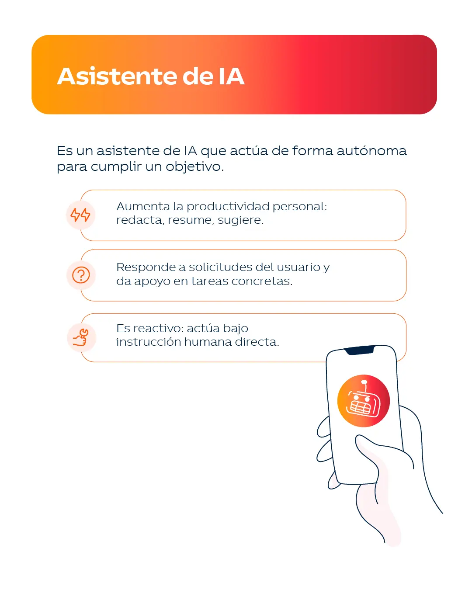
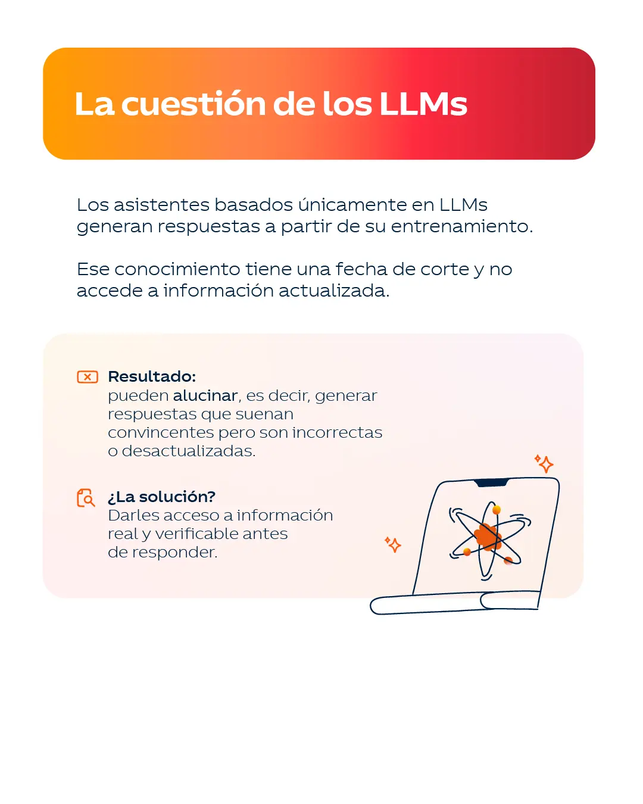
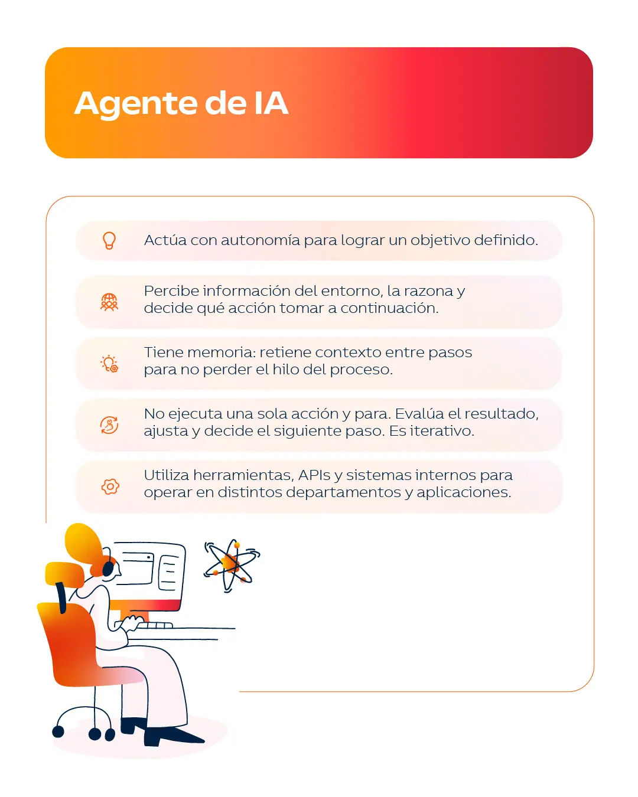

Same infographic, two brand systems. Content stays the same; the visual language changes after the rebrand.

Repsol — internal communications and rebranding
Internal newsletter (HTML layout) · explainer infographic · motion for HR and LinkedIn · LinkedIn content
The brief — Repsol sends a technical or internal topic that needs to reach employees or a LinkedIn audience. I turn it into something people actually read.
My role — Design lead for internal communications and LinkedIn content.
What I did —
- Explainer infographics. A 7-panel LinkedIn piece on AI agents, a comparison table on generative AI vs. data scientists, and a short explainer on how SEO is changing in the AI era.
- Rebrand. Redesigned the comparison table after Repsol's rebrand: same content, new visual language.
- Internal newsletter. Built "Conéctate," an HTML-coded newsletter for employees.
- Internal mobility video. Animated seven job openings as cards for an HR campaign.
How it worked — Technical brief → I translate it into a clear visual structure → design and motion → review with the internal comms team.
Result — Much of this work is internal and can't be shown here. These are the pieces I can share.

Comparison table, generative AI vs. data scientists — same content, completely redesigned after the brand rebrand.

Internal newsletter "Conéctate" — HTML layout for employees.







"From Chat to Agent" — 7-piece explainer carousel for LinkedIn about AI, agents and multi-agent systems · design and illustration for each panel.
Short LinkedIn explainer on how SEO is evolving — a technical topic translated into a readable format.
"We're looking for you!" — internal mobility video, seven job openings animated as cards · design and motion.